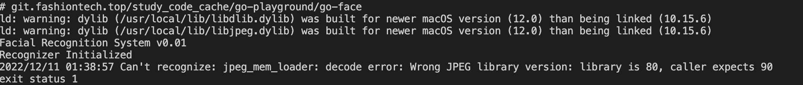

go-face人脸识别踩坑记
使用封装了 dlib 机器学习工具包的 kagami/go-face 包，极大简化了我们进行人脸识别的过程。
dlib 工具包
它是用 C++ 构建的，它在面部识别与检测方面都令人惊奇。根据它的文档，在 Wild 基准测试中检测标记面部的准确度约为 99.4%，这难以置信，也是为什么许多第三方库将其作为基础的原因
安装
我不想撒谎，让它启动并运行起来比用标准的 Go 包更痛苦一些，你需要在计算机上安装 pkg-config 和 dlib。如果你在 MacOS 上运行，命令如下：
$ brew install pkg-config dlib
$ sed -i '' 's/^Libs: .*/& -lblas -llapack/' /usr/local/lib/pkgconfig/dlib-1.pc
开始
我们首先需要下载 kagami/go-face 包，可以使用如下 go get 命令：
$ go get -u github.com/Kagami/go-face
在你的 GOPATH 目录中创建一个名为 go-face-recognition 的新目录。在此目录中创建一个名为 main.go 的文件，这是我们所有源码所在位置。
完成操作后，你需要从 TutorialEdge/ go-face-recognition-tutorial repo 的 image/ 目录中获取文件。最简单的方法是 clone repo 到另一个目录，只需复制图片目录到当前的工作目录
$ git clone https://github.com/TutorialEdge/go-face-recognition-tutorial.git
一旦成功 clone 后，我们就有了启动人脸识别的所需的 .dat 文件。你应该还看到一些其他包含复仇者联盟面孔的 .jpg 文件列表。
package main
import (
"fmt"
"github.com/Kagami/go-face"
)
const dataDir = "testdata"
func main() {
fmt.Println("Facial Recognition System v0.01")
rec, err := face.NewRecognizer(dataDir)
if err != nil {
fmt.Println("Cannot INItialize recognizer")
}
defer rec.Close()
fmt.Println("Recognizer Initialized")
}
好的，如果我们尝试在这时候运行程序，应该会在我们程序的输出中看到 Facial Recognition System v0.01 和 Recognizer Initialized. 我们已经成功的设置了所需的一切，为了做一些很酷的高级人脸识别！
坑
当你运行了go run .之后，出现如下画面：

2022/12/11 01:38:57 Can't recognize: jpeg_mem_loader: decode error: Wrong JPEG library version: library is 80, caller expects 90
翻译过来就是识别到系统中安装的库为80，但是程序需要90的库。
在网上搜了一下别人的解决方法，还发现有人振振有词的翻译反了，说是要80但是系统中是90。。。
在Mac中最简单的安装libmpeg的方法如下：
brew install libjpeg
但是像这样安装之后，并不能改变程序识别到的libjpeg为90。
于是多样尝试之后，决定直接安装libjpeg。
- 下载http://www.ijg.org/files/jpegsrc.v9e.tar.gz
- 解压后，从终端进入到 libjpeg 所在目录，用常规方法既可安装，命令如下：
./configure
make
make install
＃make test
最后一条命令make test是用来测试这个库是否安装成功的，执行这个命令后，你会看到 libjpeg 解压后所在目录下多了几张图片等，就是这个命令生成的。最后还可以用 make clean 来清理一些临时文件。
说明
如果没有执行 make install 命令或者执行失败，则使用该库的程序在运行时，可能无法链接到相应的库，会出现error while loading shared libraries: libjpeg.so.8 Not found之类的错误！！
用直接安装的方法，装哪个版本，程序识别到的就是哪个版本，自此问题解决。
坑
找不到mmod_human_face_detector.dat
rec, err := face.NewRecognizer(dataDir), 创建Recognizer需要在指定的文件夹下面包含dlib_face_recognition_resnet_model_v1.dat, shape_predictor_5_face_landmarks.dat, mmod_human_face_detector.dat三个文件，而从https://github.com/TutorialEdge/go-face-recognition-tutorial.git下载的包缺少mmod_human_face_detector.dat文件。
mmod_human_face_detector.dat是训练好的模型，可以从这里下载：
http://dlib.net/files/mmod_human_face_detector.dat.bz2
人脸识别
使用kagami/go-face包做基础的人脸识别，首先要将要识别的对象的样例图片识别结果所得到的人脸描述符的数组（samples）传给Recognizer。
// Pass samples to the recognizer.
rec.SetSamples(samples, avengers)
然后对要进行识别的目标照片进行识别
face, err := rec.RecognizeSingleFile(testTonyStark)
然后通过将目标照片的人脸描述符通过rec.Classify(face.Descriptor)方法进行分类，可以获得一个从样例图片中从左到右识别到的人脸描述符数组中的序号，如果序号小于0则识别的目标照片在样例照片中不存在，不是我们要寻找的目标人脸，如果序号大于0，则找到目标。